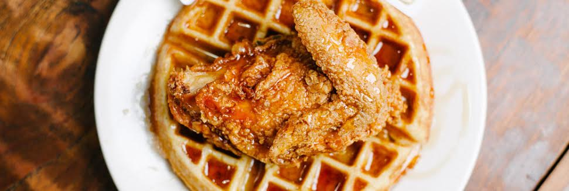

Chicken N' Waffles
Ingredients
- 1 (3 pound) whole chicken, cut into pieces
- 3 cup all-purpose flour
- salt to taste
- ground black pepper to taste
- garlic powder
- onion powder
- seasoning salt
- 1 teaspoon cayenne pepper
- 5 eggs
- hot sauce
- 1 3/4 cups milk
- 1.5 quarts vegetable oil for frying
- 1/2 teaspoon vanilla extract
- 4 teaspoons baking powder

Golden Fried Chicken Recipe
- Season chicken pieces with salt, pepper, garlic powder, onion powder, season salt, and cayenne pepper
- Marinate seasoned chicken in hot sauce
- Preheat your oil, in either a heavy pan on the stove or a deep-fryer, to 325 degrees F.
- Crack eggs into a bowl large enough for the chicken to be dipped in the eggs.
- Prepare your dredging station. Place your chicken in a bowl. Next to that, your bowl of eggs, and next to that, your flour.
- Take your chicken pieces, lightly dust them with flour, then dip them in the eggs until they are coated, and then place them in the flour mixture.
- Place chicken pieces in hot oil. Cover, and fry until golden, turning once, 15 to 20 minutes. Drain on paper towels.
Fluffy Waffle Recipe
- Preheat waffle iron. Beat eggs in large bowl with hand beater until fluffy. Beat in flour, milk, vegetable oil, sugar, baking powder, salt and vanilla, just until smooth.
- Spray preheated waffle iron with non-stick cooking spray. Pour mix onto hot waffle iron. Cook until golden brown. Serve hot.